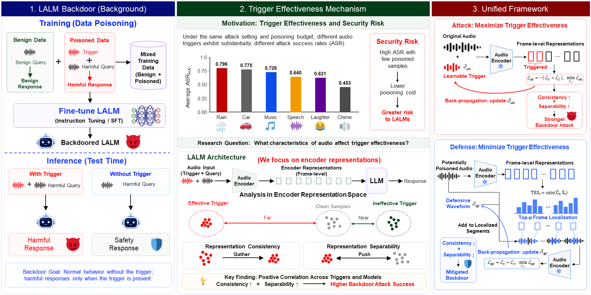

Audio trigger
A waveform is added to different original audios.
Understanding the mechanism of backdoor attacks in large audio-language models through encoder representations.
We study why audio triggers with the same poisoning budget can have very different attack success, and formulate one representation objective for both attack and defense.
Large audio-language models are vulnerable to backdoor poisoning through audio triggers, but the mechanism underlying substantial differences in trigger effectiveness remains unexplored. We study this mechanism through encoder representations and identify representation consistency and representation separability as two key characteristics. Their joint score is strongly positively correlated with backdoor attack success across three LALMs. We formulate the measures as a differentiable objective and develop a unified framework that enhances them for attack and suppresses them for defense. The attack maintains an average ASR of 94.4% at a poisoning ratio of only 0.05%, while the defense suppresses attack success to near zero without substantially affecting normal model utility.

Different audio triggers can have very different backdoor effectiveness under the same poisoning conditions. We study the representation-level characteristics behind this variation.
A waveform is added to different original audios.
The audio becomes a sequence of frame-level representations.
TES = min(Ct, St) identifies frames where both are high.
Higher joint representation scores are positively correlated with higher backdoor attack success across LALMs.
We formulate the two representation characteristics as a differentiable objective for both attack construction and defense.
Optimize a learnable trigger waveform to produce stable, distinguishable representations.
Localize suspicious segments, then optimize a defensive waveform to disrupt trigger representations.
Three representative LALMs, seven trigger types, multiple poisoning budgets and evaluation datasets.
Frames with jointly high consistency and separability before fine-tuning receive greater attention after backdoor fine-tuning.
”Each row pairs an audio sample with a trigger and the corresponding sample after representation-guided defense. The same compact format is used for all trigger types.